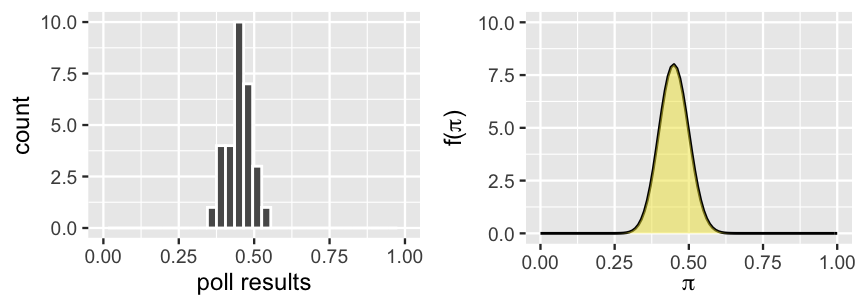
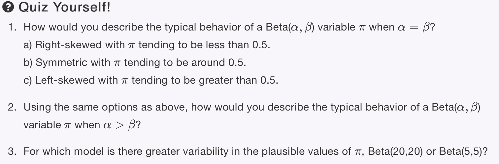
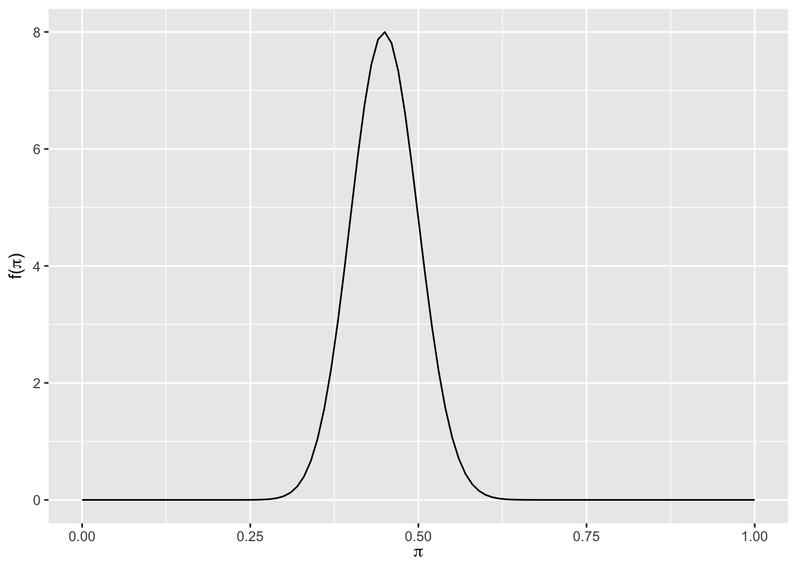
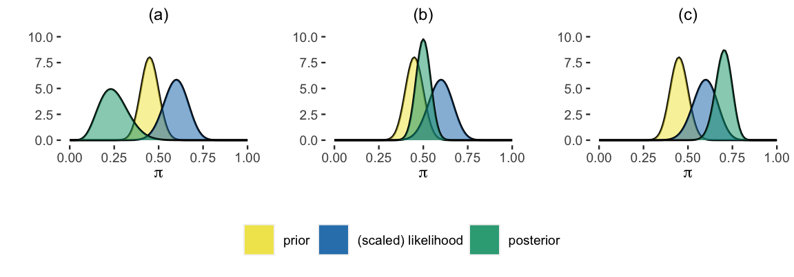
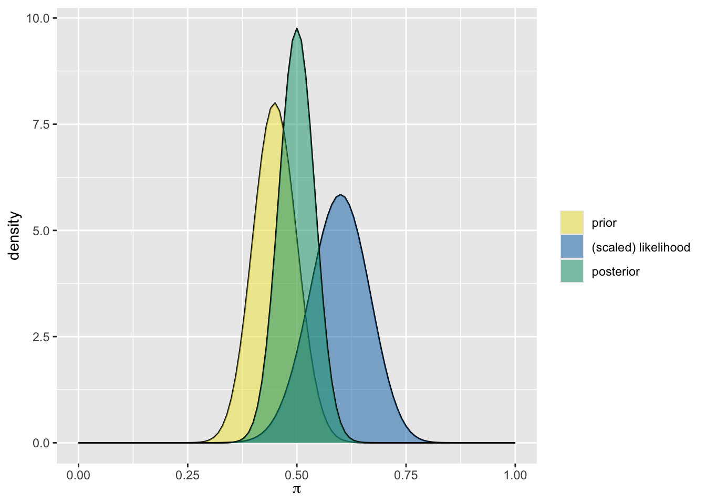

library(tidyverse)
library(bayesrules)The Beta-Binomial Bayesian Model
Background (Prior)
Every four years, Americans go to the polls to cast their vote for President of the United States. Consider the following scenario. “Michelle” has decided to run for president and you’re her campaign manager for the state of Minnesota. As such, you’ve conducted 30 different polls throughout the election season. Though Michelle’s support has hovered around 45%, she polled at around 35% in the dreariest days and around 55% in the best days on the campaign trail.

FIGURE 3.1. The results of 30 previous polls of Minnesotans’ support of Michelle for president (left) and a corresponding continuous prior model for π, her current election support (right).
This model is best understood by playing around. Figure 3.2 plots the Beta pdf f(π) under a variety of shape hyperparameters, α and β. Check out the various shapes the Beta pdf can take. This flexibility means that we can tune the Beta to reflect our prior understanding of π by tweaking α and β.


plot_beta(45, 55)
New Data
In the second step of our Bayesian analysis of Michelle’s election support π, you’re ready to collect some data. You plan to conduct a new poll of n=50 Minnesotans and record Y, the number that support Michelle. We ultimately observe that the poll was a huge success: Y=30 of n=50 (60%) polled voters support Michelle!

plot_beta_binomial(alpha = 45, beta = 55, y = 30, n = 50)
summarize_beta_binomial(alpha = 45, beta = 55, y = 30, n = 50) model alpha beta mean mode var sd
1 prior 45 55 0.45 0.4489796 0.002450495 0.04950248
2 posterior 75 75 0.50 0.5000000 0.001655629 0.04068942